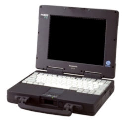
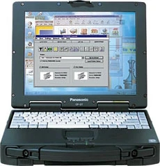
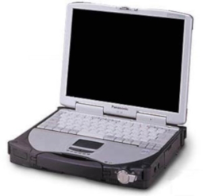

The ToughBook line is a line of rugged laptops (and later, tablets) created in 1996. The computers are not intended for consumer nor business use but rather use in environments where most computers might not work as well, such as construction, emergency services, defense and infrastructure. It is also popular in healthcare and law enforcement.
| Photo | Machine | Year Of Introduction | CPU | RAM | Hard Drive | Modem/Networking | Cache | Sound Card | GPU | Bundled Operating System | Bundled Software | Notes |
|---|---|---|---|---|---|---|---|---|---|---|---|---|
|  | CF-25 | 1996 | Intel Pentium (133MHz or 100MHz) | 8MB Stock (40MB Max) | 1.35GB (133MHz model) 840MB (100MHZ model) |
Unknown/None | Unknown | Unknown | Unknown | Microsoft Windows 95 | Panasonic Setup Panasonic Diagnostics CardWorks TranXit |
Service Manual /W specs sheet |
|  | CF-27 | 1997 | Intel Pentium II 300PE MHz | 64MB Stock (192MB Max) | 6.4GB | Unknown/None | 32KB L1 256KB L2 |
Unknown | Unknown | Microsoft Windows 95 | Panasonic Setup Utility Panasonic DMI Viewer Panasonic Hand Writing Panasonic Battery Monitor |
Service Manual /W specs sheet |
|  | CF-28 | 2002 | Intel Pentium III 600MHz | 128MB stock (384MB Max) | 20GB | Unknown/None | 32KB L1 256KB L2 |
Unknown | Unknown | Microsoft Windows NT (CF-28MCFAZCx, Likely NT 4.0) Microsoft Windows 2000 Professional (CF-28MCFAZDx) Microsoft Windows 98 Second Edition (CF-28MCFAZEx) Microsoft Windows XP Professional (Likely around 2003 or so)
|
Panasonic Setup Utility Panasonic DMI Viewer Panasonic Hand Writing |
Service Manual /w specs sheet |